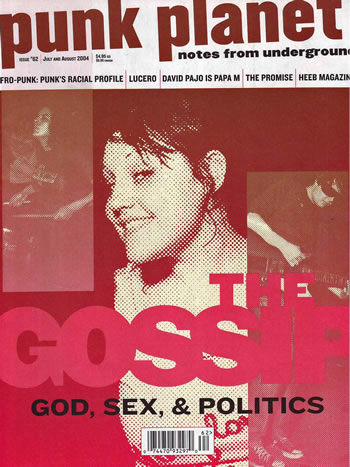

Punk Planet 62
Navigation - content:
Recreated page 40
Reflection
A DIY fanzine covering punk music, culture, and the people who keep it alive.

Information about Punk Planet 62:
Publication date:
2004-07-01
Topics:
punk, bank, rock, songs, box, bands, records, music
Language:
English
Collection:
punkplanet; zines
Links to the pages
Recreated magazine page 40
Reflection
Back to top